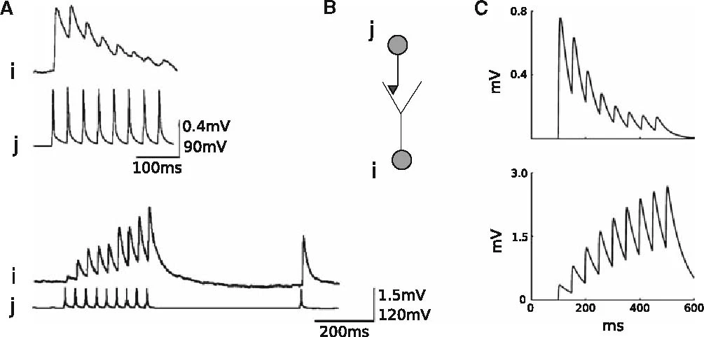
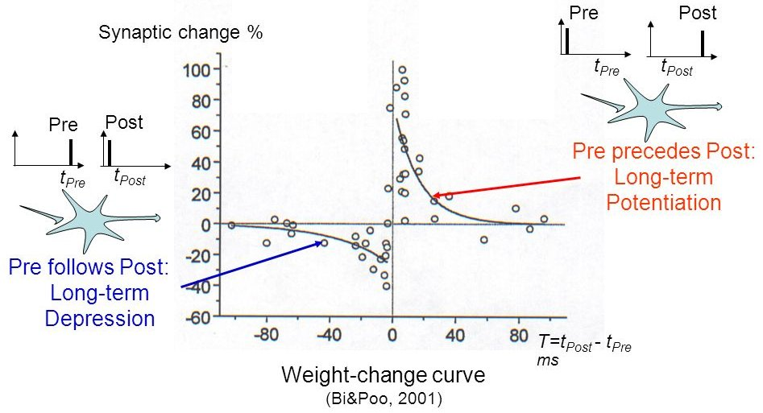

Synapse models
More complex synaptic behaviors (short-term plasticity, long-term plasticity, etc) can be defined in a synapse model.

Spiking synapses can define a pre_spike field, defining what happens when a pre-synaptic spike arrives at the synapse.
g_target is an alias for the corresponding post-synaptic conductance: it will be replaced by g_exc or g_inh depending on how the synapse is used.
By default, a pre-synaptic spike increments the post-synaptic conductance from w: g_target += w
DefaultSynapse = Synapse(
pre_spike="""
g_target += w
"""
)
proj = Projection(pop, pop, 'exc', DefaultSynapse)A Synapse object can also have parameters and variables that are updated at each time step of the simulation (expensive) or when needed (event-driven).
Short-term plasticity (STP)
Let’s implement short-term plasticity (STP) (Tsodyks, Uziel and Markram, 2000). Short-term plasticity, also called dynamical synapses, refers to a phenomenon in which synaptic efficacy changes over time in a way that reflects the history of presynaptic activity1.

We define a STP synapse, whose post-pynaptic potential (psp, define by g_target) depends not only on the weight w and the emission of pre-synaptic spike, but also on intra-synaptic variables x and u.
The synaptic variables x and u generally follow linear ODEs:
\tau_\text{rec} \, \dfrac{d x(t)}{dt} + x(t) = 1 \tau_\text{facil} \, \dfrac{d u(t)}{dt} + u(t) = 0.1
When a pre-synaptic spike arrives at the synapse, the following updates are applied asynchronously:
x(t) \leftarrow (1 - u(t)) \times x(t) u(t) \leftarrow u(t) + 0.1 \, (1 - u(t))
and the post-synaptic conductance is increased from:
g(t) \leftarrow g(t) + w \, u(t) \, x(t)
STP = Synapse(
parameters = """
tau_rec = 1.0
tau_facil = 1.0
U = 0.1
""",
equations = """
dx/dt = (1 - x) / tau_rec : init = 1.0, event-driven
du/dt = (U - u) / tau_facil : init = 0.1, event-driven
""",
pre_spike="""
g_target += w * u * x
x *= (1 - u)
u += U * (1 - u)
"""
)Spike-Timing Dependent plasticity (STDP)

The weight change of a synapse from a presynaptic neuron j depends on the relative timing between presynaptic spike arrivals and postsynaptic spikes2, i.e. on the the causation between the neuron’s firing patterns:
- If the pre-synaptic neuron fires before the post-synaptic one, the weight is increased (long-term potentiation). Pre causes Post to fire.
- If it fires after, the weight is decreased (long-term depression). Pre does not cause Post to fire.
The STDP (spike-timing dependent plasticity, Bi and Poo, 2001) plasticity rule describes how the weight of a synapse evolves when the pre-synaptic neuron fires at t_\text{pre} and the post-synaptic one fires at t_\text{post}.
\Delta w = \begin{cases} A^+ \, \exp (- \dfrac{t_\text{post} - t_\text{pre}}{\tau^+}) \qquad \text{if} \qquad t_\text{post} > t_\text{pre} \\ - A^- \, \exp (\dfrac{t_\text{post} - t_\text{pre}}{\tau^-}) \qquad \text{if} \qquad t_\text{post} < t_\text{pre} \\ \end{cases}
STDP can be implemented online using traces, which is much more efficient. More complex variants of STDP (triplet STDP) exist, but this is the main model of synaptic plasticity in spiking networks.
Similarly to pre_spike, post_spike defines what happens when a post-synaptic spike is emitted. This can be used to implement the event-driven version of STDP using traces.
STDP = Synapse(
parameters = """
tau_plus = 20.0 : projection ; tau_minus = 20.0 : projection
A_plus = 0.01 : projection ; A_minus = 0.01 : projection
w_min = 0.0 : projection ; w_max = 1.0 : projection
""",
equations = """
tau_plus * dx/dt = -x : event-driven # pre-synaptic trace
tau_minus * dy/dt = -y : event-driven # post-synaptic trace
""",
pre_spike="""
g_target += w
x += A_plus * w_max
w = clip(w + y, w_min , w_max)
""",
post_spike="""
y -= A_minus * w_max
w = clip(w + x, w_min , w_max)
""")Download the Jupyter notebook: STDP.ipynb or run it directly on colab.